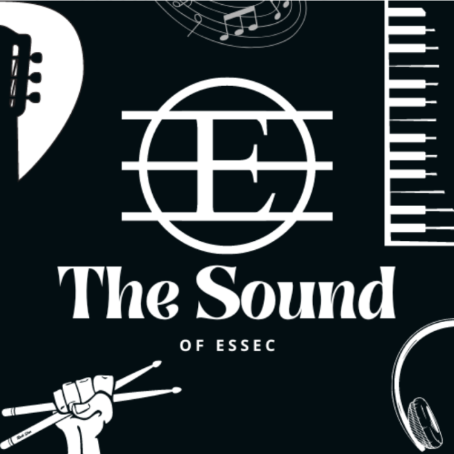
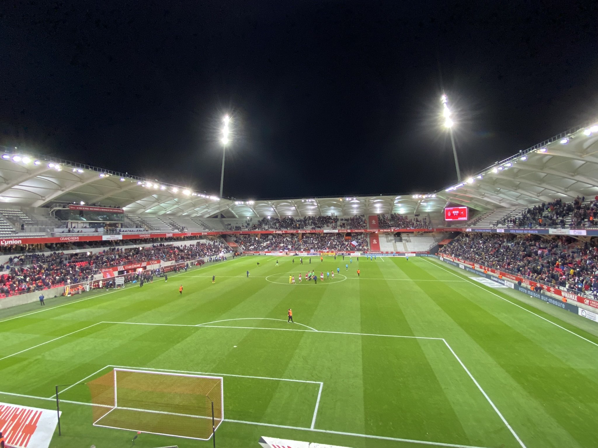

Bonjour! My name is Jules Vignon. I'm from Reims, France : born and raised there. I lived there for the first 18 years of my life, then I moved to Singapore. That was the first time I left home to live somewhere else. I joined the BBA program at ESSEC Business School.
Since I joined ESSEC Singapore, I became the president of the Singaporean branch of ESSEC Student Media which consists of an journalistic and events association. We organise the Essec Tonight Show, a concept inspired of the well-known "Tonight Show" hosted by Jimmy Fallon. It's one of the main events on campus. The association was originally from Cergy's campus and the Singaporean branch was born not later than two months ago.
I'm also a member of a music association called Sound of Essec. Here, I'm part of the band that perform every semester during the Essec Talent Show, an event that we organise. The Talent Show gather different talents among the Singaporean campus to perform in from of all the Essec students. This is one of the major event in the APAC campus.
I'm a big sport enjoyer and player. I started karate class when I was 5 years, and still attending it as a 19 years old guy now. I met many good friends there, but most importantly it helps me to control my emotions and body. Humans being are capable of doing many great things with their body but never really take the opportinity to reach their full potential. Doing karate helped me to master body balance, flexility, strengh, and reflexes. But I've always been a real football fan, my favorite team being the Stade de Reims, currently playing in the first french division.
I believe sports have contributed a lot to my personal growth and character. They've increased my self-esteem, improved my social skills and leadership abilities, my resilience and developed a positive attitude towards hard moments. Sports have taught me that failing is completely normal when learning something new, to respect the opponents and Fairplay among many other things.
Overall, without sports, I wouldn't have become who I currently am; I feel they're part of my personality.
I've always had a creative mind and makingmusic helped me to display each idea I could have into my software. I started this activity 6 years ago and since then, I clearly improved my music theory, arrangement, mixing and mastering skills. Thanks to all the tutorials and masterclasses you can found on the Internet, making music and especially electronic music became way much easier nowadays.
I recently started a project, some kind of album that I want to release on my own. I want this project to be as much personal as possible. I received so many great feedbacks from my family and friends, it gave me the motivation to pursue these creation, and eventually releasing this project.